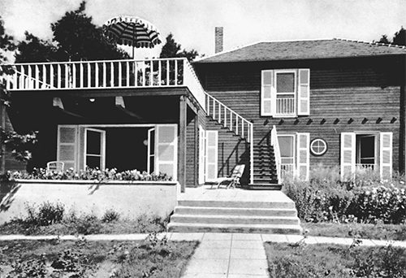

Ngôi nhà của Einstein ở Caputh gần Berlin
Einstein muốn được ở một mình trong sinh nhật lần thứ 50, ông muốn có một chỗ lánh xa sự chú ý của công chúng. Vì vậy, vào tháng Ba năm 1929, như vài tháng trước khi bài nghiên cứu về lý thuyết trường thống nhất của ông được xuất bản, ông lại đến trang viên nằm trên một khu đất ven sông Havel thuộc sở hữu của Janos Plesch167, một bác sỹ nổi tiếng người gốc Hungary có tính ưa khoa trương và nhiều chuyện, đã thêm Einstein vào bộ sưu tập những người bạn là bệnh nhân của mình.
Suốt nhiều ngày liền, ông sống một mình, tự nấu ăn, trong khi các nhà báo và những người thiện chí tìm kiếm ông. Nơi chốn của ông trở thành chủ đề phỏng đoán của báo chí. Chỉ gia đình và trợ lý của ông mới biết ông ở đâu, và họ từ chối tiết lộ thông tin đó cho cả những người bạn thân thiết của ông.
Sáng sớm sinh nhật, ông đi từ chỗ trú ẩn không có điện thoại tới ngôi nhà gần đó để gọi điện cho Elsa. Bà mở lời chúc ông sức khỏe khi đạt đến dấu mốc 50 năm, nhưng ông ngắt lời bà. “Sinh nhật phiền hà quá,” ông cười lớn. Ông gọi điện để nói về vấn đề liên quan tới vật lý, chứ không phải vì chuyện riêng tư. Ông nói với bà rằng ông đã mắc một lỗi nhỏ trong mấy phép tính mà ông đã đưa cho trợ lý Walther Mayer168, và ông muốn bà ghi lại phần sửa rồi chuyển nó cho Mayer.
Chiều đó, Elsa và các cô con gái ra ngoài tổ chức một lễ kỷ niệm riêng tư, nho nhỏ. Bà không vui khi thấy ông mặc bộ đồ cũ nhất mà bà đã giấu thật kỹ. Bà hỏi: “Sao anh tìm thấy nó được nhỉ?”
Ông đáp: “À, anh biết tất cả những chỗ giấu mà.”
Tờ New York Times, dũng cảm như mọi lần, là tờ báo duy nhất tìm thấy ông. Một thành viên gia đình sau đó kể lại rằng cái nhìn giận dữ của Einstein khiến phóng viên phải lẩn mất. Điều đó không đúng. Đó là một phóng viên thông minh, và Einstein, bất chấp sự giận dữ giả đò, vẫn xuề xòa như thường thấy. “Einstein được phát hiện khi đang trốn trong sinh nhật của mình” là nhan đề của bài báo. Ông cho phóng viên này xem một chiếc kính hiển vi mà ông được tặng làm quà, và bài báo viết, ông như một “cậu bé vui sướng” với món đồ chơi mới.
Các món quà và những lời chúc mừng khác đến từ khắp nơi trên thế giới. Những món quà làm ông cảm động nhất là của những người bình thường. Một cô thợ may gửi thơ tặng ông, một người đàn ông thất nghiệp dành dụm được vài xu để mua tặng ông một bao thuốc lá nhỏ. Bao thuốc lá đó làm ông bật khóc, và đó là lần đầu tiên ông viết một bức thư cảm ơn.
Có một món quà sinh nhật gây ra nhiều rắc rối. Thành phố Berlin, theo đề nghị của Tiến sỹ Plesch ưa can thiệp, quyết định tôn vinh công dân nổi tiếng nhất của mình bằng cách mua tặng và trao cho ông quyền sống suốt đời trong một ngôi nhà đồng quê, nằm trong khu đất ven một hồ lớn. Ở đó, ông có thể ẩn dật, đi thuyền và viết các phương trình trong cảnh thanh bình.
Đó là một hành động tử tế và hào hiệp. Đó cũng là một hành động thể hiện sự ân cần. Einstein thích đi thuyền, sự đơn độc và tính đơn giản, nhưng ông chẳng có một chốn nghỉ ngơi nào cho dịp cuối tuần, và phải để dành những chuyến đi thuyền với bạn bè. Ông vui mừng nhận nó.
Ngôi nhà mang phong cách cổ điển và nằm nép mình trong một công viên gần làng Cladow bên một hồ lớn do sông Havel tạo thành. Hình ngôi nhà đã xuất hiện trên báo, và một người thân gọi nó là “chốn trú ngụ lý tưởng cho một người có trí tuệ sáng tạo và cũng là người thích đi thuyền”. Nhưng khi Elsa đến kiểm tra, bà thấy đôi vợ chồng thuộc dòng dõi quý tộc đã bán khu đất này cho thành phố vẫn đang ở đó. Họ khẳng định họ vẫn giữ quyền sống trong ngôi nhà. Các tài liệu về vấn đề này chứng tỏ họ đã đúng, và không ai đuổi họ đi được.
Vì vậy, thành phố quyết định cấp cho Einstein một phần khác trong khu đất để xây nhà riêng. Nhưng việc đó cũng vi phạm thỏa thuận mua bán của thành phố. Áp lực và sự chú ý của công chúng càng khiến gia đình chủ đất thêm quyết tâm cấm cản gia đình Einstein xây dựng trên mảnh đất này, và nó trở thành một thất bại đáng xấu hổ được đăng tải trên các trang nhất, đặc biệt là sau khi phương án gợi ý thứ ba cũng không thực hiện được.
Cuối cùng, thành phố quyết định để gia đình Einstein tự tìm mảnh đất cho mình, và thành phố sẽ mua mảnh đất đó. Vì vậy, Einstein chọn một mảnh đất, do bạn bè ông sở hữu, cách xa thành phố hơn và gần một ngôi làng ở phía Nam Potsdam tên là Caputh. Mảnh đất này nằm trong vùng đồng quê giữa sông Havel với một khu rừng rậm, và Einstein rất thích nó. Vì vậy, vị Thị trưởng triệu tập cuộc họp các cấp phó của thành phố và thông qua khoản chi 20.000 mark để mua khu đất này làm quà sinh nhật lần thứ 50 dành tặng Einstein.
Một kiến trúc sư trẻ vẽ bản quy hoạch, Einstein mua thêm một mảnh vườn nhỏ gần đó. Rồi chuyện chính trị xen vào. Trong cuộc họp, những người cánh hữu thuộc phe Dân tộc Đức phản đối, trì hoãn cuộc bỏ phiếu và nhất quyết cho rằng nên đưa đề xuất này vào chương trình nghị sự trong tương lai để thảo luận đầy đủ. Mọi sự dần trở nên rõ ràng rằng cá nhân Einstein sẽ là trọng tâm của cuộc thảo luận đó.
Vì vậy, ông viết trong một bức thư, không giấu sự tức cười, từ chối món quà. Ông viết cho Thị trưởng: “Cuộc đời rất ngắn trong khi giới chức thì làm việc chậm chạp. Sinh nhật của tôi đã qua rồi, và tôi từ chối món quà này.” Ngày hôm sau, tít đầu trên tờ Berliner Tageblatt là dòng chữ: “Nỗi hổ thẹn công khai / Einstein từ chối”.
Đến thời điểm này, gia đình Einstein đã mê mẩn khu đất ở Caputh, họ đã tiến hành đàm phán mua nó và có thiết kế cho ngôi nhà mà họ định xây dựng ở đó. Vì vậy, họ tự bỏ tiền mua khu đất. Elsa phàn nàn: “Chúng tôi đã sử dụng gần như toàn bộ số tiền tiết kiệm, nhưng chúng tôi có được mảnh đất của mình.”
Ngôi nhà của họ thật đơn giản với những tấm gỗ đánh bóng đặt ở trong, còn những tấm chưa được đánh véc-ni thì hướng ra ngoài. Qua khung cửa sổ lớn chẳng khác gì một khung hình là cảnh sắc thanh bình của sông Havel. Marcel Breuer, nhà thiết kế nội thất nổi tiếng ở Bauhaus, ngỏ lời muốn thiết kế nội thất cho căn nhà, nhưng Einstein là một người bảo thủ trong sở thích. Ông nói: “Tôi không định ngồi trên những món đồ cứ liên tục làm tôi nghĩ tới những xưởng máy hay phòng mổ trong bệnh viện đâu.” Thay vào đó, một số món đồ cồng kềnh còn lại từ căn hộ ở Berlin được gia đình ông đem về đây sử dụng.
Căn phòng của Einstein ở tầng trệt có một chiếc bàn gỗ thường, một chiếc giường và một bức chân dung nhỏ của Isaac Newton. Phòng của Elsa cũng ở tầng dưới, có phòng tắm cho cả hai dùng chung. Tầng trên là những phòng ngủ cho hai cô con gái và người hầu gái. Không lâu sau khi chuyển đến đây, ông viết thư kể với em gái: “Anh cực kỳ thích sống ở căn nhà gỗ nhỏ mới này dù vì nó mà anh khánh kiệt. Có thuyền buồm, khung cảnh mênh mang, những chuyến dạo bộ một mình vào mùa thu và tương đối tĩnh lặng – đây đúng là thiên đường.”
Ở đó, ông đi chiếc thuyền mới 23 foot mà những người bạn tặng ông nhân dịp sinh nhật, có tên là Cá heo (Tümmler), chiếc thuyền được đóng to và chắc chắn theo đúng yêu cầu của ông. Ông thích đi thuyền một mình dù không biết bơi. Một vị khách từng tới thăm nhớ lại: “Ngay khi chạm vào nước là ông ấy vui sướng hân hoan.” Ông thường để con thuyền lững lờ trôi và lướt đi vô định nhiều giờ liền khi ông nhẹ nhàng nghịch bánh lái. Theo lời kể của một người thân: “Tư duy khoa học của ông, vốn chưa bao giờ mất đi ngay cả khi ông ấy ở trên mặt nước, chuyển thành bản tính mộng mơ. Vì vậy mà những suy tư lý thuyết thêm giàu sức tưởng tượng.”
Trong suốt cuộc đời Einstein, những mối quan hệ của ông với nữ giới dường như bị những lực thật khó khắc chế tác động. Sức hút như nam châm và phong thái trầm mặc của ông cuốn hút phái nữ hết lần này đến lần khác. Dù ông thường tránh vướng vào những mối quan hệ ràng buộc nhưng đôi khi lại thấy mình bị hút vào vòng xoáy đam mê khi ở bên Mileva Marić và thậm chí là Elsa.
Năm 1923, sau khi cưới Elsa, ông phải lòng thư ký của mình, Betty Neumann. Theo những bức thư mới được tiết lộ, chuyện tình của họ nghiêm túc và say đắm. Mùa thu năm đó, trong chuyến thăm Leiden, ông đã viết thư gợi ý rằng ông có thể nhận một công việc ở New York, và bà có thể đến đó làm thư ký cho ông. Ông mơ mộng cảnh bà sẽ sống ở đó với ông và Elsa. Ông nói: “Anh sẽ thuyết phục vợ anh cho phép việc này. Chúng ta có thể sống cùng nhau mãi mãi. Chúng ta có thể mua một ngôi nhà lớn bên ngoài New York.”
Bà đáp lại bằng cách chế giễu cả ông lẫn ý tưởng, điều đó khiến ông phải thừa nhận rằng mình “ngốc nghếch” đến mức nào. “Em tôn trọng những cái khó của hình học tam giác hơn là anh, một ông già làm toán học, đấy.”
Cuối cùng ông cũng chấm dứt chuyện tình này bằng lời than vãn rằng mình phải “tìm kiếm trong các vì sao” tình yêu thật sự mà ông bị chối từ trên Trái đất này. “Betty yêu quý, hãy cười anh đi, chú lừa già này, tìm người nào đó trẻ hơn anh 10 tuổi và yêu em nhiều như anh yêu em.”
Nhưng mối quan hệ này vẫn dằng dai. Mùa hè năm sau, Einstein đi gặp những cậu con trai mình ở miền nam nước Đức, và ở đây ông viết cho vợ mình rằng ông không thể tới thăm bà và các cô con gái hiện đang ở khu nghỉ dưỡng gần đó, vì thế thì “tốt quá mức”. Đồng thời, ông viết cho Betty Neumann nói rằng ông sẽ bí mật đến Berlin nhưng bà đừng nói với ai vì nếu Elsa phát hiện, Elsa sẽ “bay về ngay”.
Sau khi ông xây nhà ở Caputh, nhiều người bạn gái đến đó thăm ông với sự đồng ý miễn cưỡng của Elsa. Toni Mendel, một góa phụ giàu có sở hữu một khu đất ở Wannsee, thỉnh thoảng đến Caputh đi thuyền với ông hoặc ông sẽ đi thuyền lên biệt thự của bà, và ở đó đến tận khuya chơi piano. Thỉnh thoảng, họ còn cùng nhau đi xem kịch ở Berlin. Một lần, khi bà này đến đón Einstein trên chiếc xe hơi của mình, Elsa đã cãi vã kịch liệt với ông và không cho ông tiền tiêu vặt.
Ông cũng có quan hệ với một người có vai vế ở Berlin tên là Ethel Michanowski. Bà này đã đi theo ông trong chuyến đi tới Oxford vào tháng Năm năm 1931, và xác thực đã lưu lại một khách sạn địa phương. Một hôm, ông viết tặng bà một bài thơ năm dòng trên một tờ giấy hoa viết thư của Cao đẳng Christ Church. Bài thơ mở đầu như sau: “Vươn dài và căng khéo. Chẳng gì thoát được cái nhìn của nàng.” Một vài ngày sau, bà gửi cho ông một món quà đắt tiền, nó khiến ông không vui. Ông viết: “Cái gói nhỏ này thật sự làm anh giận. Em phải thôi việc gửi quà liên tiếp cho anh đi… Cứ gửi những thứ gì giống thế tới một trường đại học Anh, nơi chúng ta được bao quanh bởi sự giàu có vô nghĩa ấy!”
Khi Elsa phát hiện ra rằng Michanowski đã đến thăm Einstein ở Oxford, bà nổi giận, đặc biệt là với Michanowski vì đã nói dối bà về nơi bà ta đến. Từ Oxford, Einstein viết thư khuyên Elsa bình tĩnh. Ông nói: “Sự thất vọng của em về Frau M hoàn toàn không có cơ sở vì cô ấy cư xử hoàn toàn đúng theo tinh thần đạo đức cao nhất của một tín hữu Cơ Đốc Do Thái. Bằng chứng đây nhé: Một là, những gì một người thích và không hại đến ai, thì người đó nên làm. Hai là, những gì mà một người không thích và chỉ khiến người khác phát cáu, thì người đó không nên làm. Bởi vì điều một mà cô ấy đến thăm anh, và vì điều hai nên cô ấy không nói gì với em cả. Đó chẳng phải là cách cư xử không thể chê vào đâu được sao?” Nhưng trong một bức thư gửi cô con gái Margot của Elsa, cũng là bạn của Michanowski, Einstein khẳng định việc Michanowski theo ông là ngoài ý muốn. “Chuyện cô ấy theo cha đến đây nằm ngoài tầm kiểm soát. Cha không quan tâm tới những gì người ta nói về cha nhưng vì mẹ [Elsa] và vì Frau M., tốt hơn là đừng để Tom, Dick và Harry bàn tán về chuyện này.”
Trong bức thư gửi cho Margot, ông một mực khẳng định mình không đặc biệt gắn bó với Michanowski, hay với đa số những người phụ nữ tán tỉnh ông. Ông nói, nhưng không mấy làm yên lòng: “Trong số tất cả những người phụ nữ ấy, cha chỉ thực sự gắn bó với Frau L, một người hoàn toàn vô hại và đáng trọng.” Người ông đề cập là một phụ nữ người Áo tóc vàng tên là Margarete Lebach, người mà ông có mối quan hệ rất công khai. Khi Lebach đến Caputh thăm Einstein, bà mang bánh ngọt cho Elsa. Nhưng Elsa, thật dễ hiểu, không chịu được Lebach, và bà tới Berlin mua sắm vào những ngày Lebach đến.
Trong một chuyến thăm, Lebach để lại một món đồ trên chiếc thuyền của Einstein, chuyện này gây ra một cuộc cãi vã trong gia đình, khiến con gái của Elsa phải giục bà buộc Einstein chấm dứt mối quan hệ này. Nhưng Elsa sợ rằng chồng mình sẽ từ chối. Ông đã nói rõ ông tin rằng bản chất của đàn ông và đàn bà không phải là những người một vợ một chồng. Cuối cùng, bà quyết định tốt hơn cả là nên gìn giữ những gì có thể trong cuộc hôn nhân của họ. Xét các phương diện khác thì cuộc hôn nhân này phù hợp với mong muốn của bà.
Elsa yêu quý chồng, và kính trọng ông. Bà nhận ra rằng bà phải chấp nhận tất cả những gì phức tạp trong ông, đặc biệt là kể từ khi cuộc sống của bà với tư cách là bà Einstein có nhiều điều làm bà hạnh phúc. “Một thiên tài như thế không nên có điểm gì phải bị chê trách từ bất cứ khía cạnh nào,” bà đã nói như vậy với họa sỹ và là thợ khắc Hermann Struck169, người vẽ bức chân dung Einstein quanh thời điểm sinh nhật lần thứ 50 của ông (đây cũng là người thực hiện công việc này một thập kỷ trước đó). “Nhưng Tự nhiên đã không làm thế. Khi cho quá nhiều ở chỗ này thì Người cũng lấy đi quá nhiều ở chỗ khác.” Cái xấu và cái tốt phải được chấp nhận như một thể thống nhất. Bà giải thích: “Anh phải thấy toàn bộ con người anh ấy. Thượng Đế đã cho anh ấy nhiều phẩm chất cao quý, và tôi thấy anh ấy tuyệt vời, dù cuộc sống với anh ấy mệt mỏi và phức tạp không chỉ theo một mà nhiều cách khác nhau.”
Người phụ nữ quan trọng nhất còn lại trong cuộc đời Einstein là một người hoàn toàn kín đáo, thu mình, trung thành và không phải là mối đe dọa đối với Elsa. Helen Dukas là thư ký của Einstein năm 1928, khi ông nằm liệt giường vì đau tim. Elsa biết chị của Dukas, người điều hành Tổ chức Trẻ mồ côi Do Thái mà Elsa là chủ tịch danh dự. Elsa đã phỏng vấn Dukas trước khi cho Dukas gặp Einstein, bà cảm thấy Dukas là người đáng tin cậy, và quan trọng hơn, Dukas an toàn xét trên mọi mặt. Bà đề nghị Dukas nhận công việc này thậm chí trước khi Dukas gặp Einstein.
Vào tháng Tư năm 1928, khi đó mới 32 tuổi, Dukas được đưa vào phòng bệnh của Einstein, ông vươn tay ra và mỉm cười: “Nằm đây là thân xác của một đứa trẻ lớn tuổi đấy.” Từ khoảnh khắc đó đến khi ông qua đời vào năm 1955 – thực tế là đến khi bà qua đời vào năm 1982 – Dukas, người phụ nữ không hề lập gia đình, đã quyết liệt bảo vệ thời gian, sự riêng tư, danh tiếng và sau này là di sản của Einstein. “Bản năng của bà ấy hệt như một chiếc la bàn, giản đơn và không thể sai lệch.” Mặc dù có thể nở một nụ cười dễ chịu và thể hiện sự thẳng thắn với những người mà mình yêu mến, nhưng nhìn chung bà là người khổ hạnh, cứng rắn và đôi khi khá gai góc.
Không chỉ là thư ký, đối với những người bên ngoài hay xâm phạm, bà giống như một chú chó bảo vệ Einstein – thần khuyển Cerberus, chú chó gác cổng vương quốc Địa phủ nhỏ bé của riêng ông, như cách ông gọi bà. Bà sẽ giữ chân cánh nhà báo, chặn trước những lá thư mà bà cho là làm tốn thời gian của ông và xử lý những vấn đề mà bà cho là nên giữ kín. Sau một thời gian, bà trở nên thân thiết như một thành viên trong gia đình.
Một vị khách khác thường ghé thăm Einstein là một nhà toán học trẻ đến từ Vienna, Walther Mayer, người sau này trở thành trợ lý và “chiếc máy tính” của Einstein theo lời kể của ông. Einstein cộng tác với Mayer trong một số bài nghiên cứu về lý thuyết trường thống nhất, và ông gọi Mayer là “một người tuyệt vời, lẽ ra đã là giáo sư lâu rồi nếu cậu ta không phải là người Do Thái.”
Mileva Marić, người đã lấy lại tên thời con gái sau khi ly dị, cũng bắt đầu dùng lại tên Einstein, tạo thành mối quan hệ dù còn căng thẳng nhưng có thể tác động tới ông. Khi đi Nam Mỹ, ông đã mang về cho bà những giỏ xương rồng. Vì bà yêu loài cây này, nên có thể cho rằng đây là một món quà thân mật. Trong những chuyến thăm của ông tới Zurich, thỉnh thoảng ông cũng ở lại căn hộ của bà.
Khi Marić đến Berlin, ông thậm chí còn mời bà ở lại với ông và Elsa, một cách thu xếp có lẽ khiến tất cả những người liên quan đều không thoải mái. Thay vì chấp nhận lời mời, bà khôn khéo ở lại với gia đình Haber. Mối quan hệ của họ đã cải thiện nhiều đến mức, như lời ông kể với bà về việc những người bạn của họ ngạc nhiên khi nghe được rằng hai người đã hòa thuận với nhau thế nào. “Elsa cũng vui mừng vì cô và các con không còn có thái độ thù địch với cô ấy nữa,” ông không quên nói thêm.
Ông nói với Marić rằng hai đứa con trai của họ là những gì đẹp đẽ nhất trong tâm khảm ông, một di sản sẽ còn lại sau khi chiếc đồng hồ sinh học của ông rệu rã. Bất chấp điều này, hay không biết có phải chính vì nó, mối quan hệ của ông với các cậu con trai vẫn căng thẳng. Chuyện đúng là thế, khi Hans Albert quyết định kết hôn.
Cứ như thể các vị Thần muốn trả thù, tình huống này giống hệt lúc mà Einstein buộc cha mẹ mình phải trải qua khi ông quyết định lấy Mileva Marić. Trong thời gian theo học ở trường Bách khoa Zurich, Hans Albert đã phải lòng một thiếu nữ hơn mình chín tuổi tên là Frieda Knecht. Cao chỉ chừng một mét năm, Knecht giản dị và có lối cư xử có phần thiếu lễ độ, nhưng rất thông minh. Vì chuyện này mà cả Marić và Einstein đã hợp lại với nhau, họ cùng cho rằng Knecht mưu mô, chẳng xinh đẹp gì và có thể sinh ra những đứa con không khỏe mạnh. Ông viết thư cho Marić: “Tôi đã cố hết sức thuyết phục thằng bé rằng cưới cô ta là việc điên rồ. Nhưng có vẻ nó đã hoàn toàn lệ thuộc vào cô ta, nên mọi thứ đều chẳng ích gì.”
Einstein cho rằng con trai mình đã bị dính bẫy, bởi Hans Albert vốn nhút nhát và thiếu kinh nghiệm về phụ nữ. Ông viết cho Hans Albert: “Cô ta là người nắm lấy con trước và giờ con xem cô ta là hiện thân của nữ tính. Đó là cái lối ai cũng biết mà cánh đàn bà thường dùng để lợi dụng những người thanh cao.” Vậy nên, ông gợi ý rằng một người phụ nữ cuốn hút sẽ khắc phục được những vấn đề này.
Nhưng Hans Albert cũng cứng đầu hệt như cha mình 25 năm trước, và anh quyết tâm cưới Frieda bằng được. Einstein thừa nhận ông không thể ngăn cản Hans Albert, nhưng cố hối thúc cậu hứa không được có con. “Nếu có ngày nào đó con cảm thấy con phải bỏ cô ta, thì con cũng đừng quá kiêu hãnh đến mức dám nói với cha. Rốt cuộc, ngày ấy sẽ đến,” ông viết.
Hans Albert và Frieda cưới nhau năm 1927, họ có con và vẫn sống với nhau đến khi Frieda qua đời 31 năm sau đó. Như Evelyn Einstein, cô con gái mà Hans Albert và Frieda nhận nuôi, nhớ lại nhiều năm sau này: “Ông Albert đã trải qua một thời gian khủng khiếp do thái độ của của cha mẹ đối với chuyện cưới xin của ông, đến độ chắc bạn sẽ nghĩ rằng ông hẳn sẽ không can thiệp gì vào chuyện cưới xin của con trai mình. Nhưng không. Khi cha tôi cưới mẹ tôi, hết cuộc bùng nổ này tiếp nối cuộc bùng nổ kia xảy ra.”
Einstein bày tỏ nỗi thất vọng của mình về chuyện kết hôn của Hans Albert trong những bức thư gửi cho Eduard. Einstein viết: “Sự suy thoái giống nòi là một vấn đề nghiêm trọng. Đó là lý do mà cha không thể tha thứ cho Albert Hans về tội lỗi của nó. Cha sẽ tránh mặt nó vì cha không thể trưng ra một bộ mặt vui vẻ được.”
Nhưng sau hai năm, Einstein bắt đầu chấp nhận Frieda. Cặp vợ chồng này đến thăm ông vào mùa hè năm 1929, và ông kể lại với Eduard rằng ông đã làm hòa với họ. “Cô ta tạo được ấn tượng tốt hơn những gì cha lo nghĩ. Hans quả thật dịu dàng với cô ta. Xin Thượng Đế ban phước cho những người lạc quan đang yêu đó,” ông viết.
Về phần mình, Eduard ngày càng trở nên mơ mộng trong những cuộc theo đuổi học thuật, và các vấn đề tâm lý của anh ngày càng bộc lộ rõ. Anh thích thơ ca, anh làm thơ và viết những cách ngôn sắc bén, đặc biệt về đề tài gia đình mình. Anh chơi piano, đặc biệt là nhạc của Chopin, với một sự say sưa mà ban đầu là một sự tương phản đáng mừng đối với trạng thái thờ ơ thường thấy ở anh, nhưng cuối cùng lại thành đáng sợ.
Những lá thư anh gửi cho cha mình đều thật mãnh liệt, như trút hết gan ruột về tâm lý và nghệ thuật. Einstein đôi khi trả lời dịu dàng, đôi khi xa cách. Eduard về sau nhớ lại: “Tôi thường gửi cho cha những bức thư khá nồng nhiệt và nhiều lần lo lắng sau đó vì ông thể hiện thái độ lạnh nhạt hơn. Chỉ mãi đến sau này, tôi mới biết ông trân quý chúng đến thế nào.”
Eduard đỗ Đại học Zurich, ở đây anh học ngành y và dự định sẽ trở thành một bác sỹ tâm thần. Anh thích học thuyết của Sigmund Freud, treo ảnh Freud trong phòng ngủ, và nỗ lực tự phân tâm chính mình. Những bức thư anh gửi cho cha mình trong giai đoạn này thể hiện đầy những nỗ lực của anh, đa phần là sắc sảo, trong việc sử dụng các học thuyết của Freud để phân tích nhiều lĩnh vực đời sống khác nhau, bao gồm cả phim ảnh và âm nhạc.
Không có gì ngạc nhiên, Eduard đặc biệt quan tâm đến mối quan hệ giữa cha và con. Một vài bình luận của anh nghe đơn giản mà thật thương tâm. Anh từng viết: “Có những lúc thật khó khăn khi có một người cha quan trọng đến nhường ấy, vì khi đó người ta sẽ thấy mình chẳng còn quan trọng.” Vài tháng sau, anh ta viết ra những lời bất an hơn: “Những người lấp đầy thời gian của mình bằng các công việc trí tuệ thì lại đem đến cho thế giới những đứa con ốm yếu, hay lo âu và thậm chí đôi khi hoàn toàn ngớ ngẩn (chẳng hạn như cha và con).”
Về sau, những bình luận của anh ngày càng phức tạp, chẳng hạn khi anh phân tích lời than thở nổi tiếng của cha mình rằng số phận đã trừng phạt ông vì xem thường quyền uy bằng cách cho ông trở thành kẻ quyền uy. Eduard viết: “Xét ở góc độ phân tâm học, điều này có nghĩa rằng vì cha không muốn khuất phục cha mình, mà thay vào đó chống lại ông, cha phải trở thành một người quyền uy để bước vào vị trí của ông.”
Vào năm 1927, Einstein đã gặp Freud khi ông từ Vienna về Berlin trong dịp năm mới. Freud, lúc đó 70 tuổi, đang bị ung thư vòm họng và một tai bị điếc, nhưng cả hai người đàn ông này đã có cuộc trao đổi thú vị, một phần vì họ tập trung nói về chính trị hơn là lĩnh vực nghiên cứu chuyên môn của mình. Freud viết cho một người bạn: “Einstein hiểu nhiều về tâm lý như tôi hiểu về vật lý vậy.”
Einstein không bao giờ đề nghị Freud gặp hoặc điều trị cho con trai mình, ông cũng có vẻ không ấn tượng với ý tưởng của phân tâm học. Ông từng viết: “Không phải lúc nào cũng hữu ích khi đi sâu vào tiềm thức. Đôi chân của chúng ta được điều khiển bởi cả trăm cơ khác nhau. Anh có nghĩ nó sẽ giúp chúng ta bước đi nếu chúng ta phân tích chân mình và biết mục đích chính xác của từng cơ cũng như trật tự vận hành của chúng không?” Ông chắc chắn cũng chưa bao giờ bày tỏ chút quan tâm nào đến việc trị liệu cho bản thân. Ông tuyên bố: “Tôi thích sự tối tăm khi không được phân tâm hơn.”
Tuy nhiên, cuối cùng ông cũng thừa nhận với Eduard, có lẽ để làm cậu vui lòng, rằng công trình của Freud cũng có giá trị nhất định. “Cha phải thừa nhận rằng qua những kinh nghiệm cá nhân nho nhỏ khác nhau, chí ít cha cũng tin vào những chủ đề chính của ông ấy.”
Khi còn học đại học, Eduard yêu một thiếu nữ lớn tuổi hơn mình, có vẻ đây là truyền thống của gia đình, hẳn điều này sẽ làm Freud thấy thú vị. Khi mối quan hệ này đi tới cái kết đau đớn, anh rơi vào trạng thái trầm cảm đến không còn sức sống. Einstein gợi ý rằng anh nên tán tỉnh một cô gái ít tuổi hơn mình. Ông cũng gợi ý anh nên tìm việc làm. Ông viết: “Ngay cả một thiên tài như Schopenhauer cũng suy sụp vì thất nghiệp. Sống cũng giống như đi xe đạp vậy. Để giữ thăng bằng, con phải đạp không ngừng nghỉ.”
Eduard không giữ được thăng bằng. Anh bắt đầu bỏ học và ở lì trong phòng. Khi anh bị rối loạn hơn, sự quan tâm và tình cảm của Einstein dành cho anh dường như tăng lên. Có một sự ngọt ngào tha thiết trong những bức thư mà ông gửi cho con trai mình khi anh đang trong cơn hỗn loạn và đưa ra những ý tưởng tâm lý, hay đang vật lộn với những cách ngôn bí ẩn của mình.
“Chẳng gì có ý nghĩa gì đối với cuộc sống ngoài bản thân cuộc sống,” Eduard tuyên bố trong một câu cách ngôn như thế.
Einstein trả lời một cách lịch sự rằng ông có thể chấp nhận điều này, “nhưng điều đó chẳng làm sáng tỏ gì nhiều”. Vì bản thân cuộc sống, Einstein nói tiếp, là một lỗ hổng. “Mọi người sống trong xã hội, thích nhìn vào mắt nhau, người ta chia sẻ rắc rối, tập trung nỗ lực của mình vào điều quan trọng đối với họ và thấy vui với chuyện đó, những người này có một cuộc sống trọn vẹn.”
Trong lời cổ vũ đó có trải nghiệm và suy tư của ông. Bản thân Einstein không phải là người có khuynh hướng hay tài năng chia sẻ những vướng mắc của người khác, thay vào đó ông nhấn mạnh vào điều mà với ông là quan trọng. Einstein thừa nhận với Marić: “Tete thật sự có nhiều điểm giống tôi, nhưng ở nó, dường như những điểm đó còn mạnh hơn. Nó là một anh chàng thú vị, nhưng mọi việc sẽ không êm đẹp với nó đâu.”
Einstein đến thăm Eduard vào tháng Mười năm 1930, ông cùng với Marić cố gắng giải quyết sự suy sụp tinh thần của cậu. Họ cùng nhau chơi piano nhưng chẳng ích gì. Eduard tiếp tục trượt sâu vào tăm tối hơn. Chẳng bao lâu sau khi ông ra về, Eduard dọa sẽ nhảy qua cửa sổ phòng ngủ, nhưng mẹ anh đã ngăn được.
Những sợi dây phức tạp trong cuộc sống gia đình của Einstein tập hợp lại trong một cảnh tượng kỳ lạ vào năm 1930. Bốn năm trước, một nhà văn người Nga thâm hiểm tên là Dimitri Marianoff đã tìm kiếm cách gặp gỡ Einstein. Với sự táo tợn và dai dẳng của mình, anh ta tự giới thiệu mình trước căn hộ của Einstein và thuyết phục được Elsa cho anh ta vào. Ở đó, anh ta tiếp tục mê hoặc Einstein bằng cách nói về nhà hát của nước Nga và cũng làm cô con gái Margot của Elsa xiêu lòng bằng cách trình diễn một màn phân tích nét chữ nết người.
Margot là người nhút nhát đến độ cô thường trốn tránh những người lạ, nhưng những trò mưu mẹo của Marianoff sớm kéo cô khỏi chiếc vỏ của mình. Đám cưới của họ diễn ra một vài ngày sau khi Eduard cố gắng tự tử và Marić quẫn trí bất ngờ đến tận Berlin nhờ chồng cũ giúp đỡ. Sau này, Marianoff đã mô tả cảnh tượng diễn ra cuối lễ cưới của mình: “Khi chúng tôi bước xuống bậc thang, tôi thấy một người đàn bà đứng gần mái cổng. Tôi sẽ chẳng chú ý đến bà ta, trừ việc bà ta nhìn vào chúng tôi với cái nhìn tóe lửa khiến tôi ấn tượng. Margot thầm thì: ‘Cô Mileva đấy.’”
Einstein quá bàng hoàng về bệnh tình của con trai. Elsa viết: “Nỗi buồn này gặm nhấm Albert. Anh ấy thật khó đối mặt với nó.”
Tuy nhiên, ông không thể làm được gì nhiều. Buổi sáng sau đám cưới, ông và Elsa đi tàu tới Antwerp, từ đây họ sẽ lên tàu thực hiện chuyến đi lần hai tới Mỹ. Họ đã có một khởi hành kịch tính. Einstein bị tách khỏi Elsa ở ga Berlin, rồi làm mất vé tàu của họ. Nhưng cuối cùng họ cũng tìm thấy nhau và bắt đầu thêm một chuyến đi thắng lợi tới nước Mỹ.
Chuyến đi thứ hai của Einstein tới Mỹ, bắt đầu vào tháng Mười hai năm 1930, được cho là khác với chuyến đi thứ nhất. Lần này, không có cơn cuồng của công chúng hay sự huyên náo kỳ quặc nào. Thay vào đó, ông đến đây làm việc hai tháng với tư cách là một nhà nghiên cứu tại Viện Công nghệ California. Những người thu xếp chuyến đi cố gắng bảo vệ sự riêng tư của ông, và cũng như những người bạn của ông ở Đức, họ xem mọi sự rùm beng đều là không phải đạo.
Như thường lệ, về lý thì Einstein dường như đồng ý. Khi thông tin ông sẽ tới Mỹ được đưa ra, ngày nào ông cũng nhận được hàng chục bức điện tín mời phát biểu và nhận giải thưởng, ông từ chối tất cả. Trong suốt chuyến đi, ông và Walther Mayer – chiếc máy tính toán học của ông – chỉ tập trung tiến hành những sửa đổi cho lý thuyết trường thống nhất, trong một căn buồng ở khoang trên có một thủy thủ đứng gác bên ngoài.
Ông thậm chí quyết định sẽ không lên bờ khi tàu cập cảng New York. Ông khẳng định: “Tôi ghét phải đứng trước máy quay và trả lời cả loạt những câu hỏi dồn dập. Lý do khiến công chúng lại quan tâm đến tôi – một nhà khoa học nghiên cứu những thứ trừu tượng, vốn chỉ sung sướng nếu được yên thân – là một biểu hiện của tâm lý đám đông vượt ra khỏi hiểu biết của tôi.”
Nhưng lúc đó, thế giới, đặc biệt là nước Mỹ, đã bước vào một thời kỳ mới, với cách nhìn khác về sự nổi tiếng. Ác cảm với sự nổi tiếng không còn được xem là chuyện đương nhiên nữa. Dù sự rùm beng trước công chúng vẫn là điều mà nhiều người giữ chuẩn mực né tránh, nhưng sức hấp dẫn của nó bắt đầu được chấp nhận. Ngay trước khi con tàu chở ông cập bến New York, Einstein đã chuyển lời rằng ông đã dịu đi trước yêu cầu của phóng viên, một cuộc họp báo sẽ được tổ chức và các phóng viên sẽ có cơ hội chụp ảnh khi ông đến.
Ông viết lại trong nhật ký hành trình rằng nó “tệ hơn cả những kỳ vọng giàu trí tưởng tượng”. Năm mươi phóng viên cộng với 50 người quay phim tụ tập trên tàu, đi kèm là viên Lãnh sự Đức và người trợ lý to béo của ông ta. “Các phóng viên hỏi nhiều câu cực kỳ ngờ nghệch, tôi trả lời bằng những câu chuyện cười chẳng ra sao, nhưng lại được đón nhận nhiệt tình.”
Khi được đề nghị định nghĩa chiều thứ tư bằng đúng một từ, Einstein trả lời: “Anh sẽ phải hỏi một người theo chủ nghĩa duy tâm.” Ông có thể định nghĩa thuyết tương đối trong một câu không? “Tôi sẽ phải mất ba ngày để đưa ra một định nghĩa ngắn gọn đấy.”
Tuy nhiên, có một câu hỏi mà ông cố gắng trả lời nghiêm chỉnh, và đáng tiếc ông đã trả lời sai. Đó là câu hỏi về một chính trị gia, lãnh tụ của một đảng không mấy tên tuổi, nhưng ba tháng trước đã nổi lên và giành được 18% phiếu bầu trong các cuộc tuyển cử ở Đức. “Ông nghĩ gì về Adolf Hitler”? Einstein trả lời: “Ông ta sống dựa vào cái dạ dày rỗng của nước Đức. Ngay khi các điều kiện kinh tế được cải thiện, ông ta sẽ chẳng còn quan trọng nữa.”
Tạp chí Time tuần đó đăng hình Elsa trên trang bìa, bà đội một chiếc mũ kiểu cách và hoan hỉ trong vai trò là vợ của nhà khoa học nổi tiếng nhất thế giới. Tạp chí đưa tin, “Vì Nhà toán học Einstein không biết cách giữ tài khoản ngân hàng,” nên vợ ông phải cân đối tài chính và thu xếp cho chuyến đi. Bà nói với tạp chí này: “Tôi đảm đương tất cả những việc này để anh ấy thấy mình tự do.” Một bổn phận bà tự giao cho mình là tính phí 1 đô-la cho chữ ký của chồng và 5 đô-la cho một bức hình ông, bà có một cuốn sổ ghi chép số tiền thu được và tặng toàn bộ số tiền đó cho các tổ chức từ thiện cho trẻ em.
Einstein thay đổi ý định ở lại tàu khi cập cảng New York. Trên thực tế, ông dường như xuất hiện ở khắp mọi nơi. Ông dự lễ Hanukka170 với 15.000 người ở khu Madison Square Garden, đi xe thăm khu phố Tàu, ăn trưa với ban biên tập tờ New York Times, được đón mừng khi đến nhà hát Metropolitan Opera nghe giọng ca soprano tuyệt hay là Maria Jeritza hát Carmen, nhận những chiếc chìa khóa vào thành phố (mà Thị trưởng Jimmy Walker nói đùa là được trao “một cách tương đối”), và được Hiệu trưởng Đại học Columbia giới thiệu là “vị quân vương thống lĩnh tâm trí”.
Ông cũng đến thăm Nhà thờ Riverside, một cấu trúc khổng lồ mới được hoàn thành, với 2.100 chỗ ngồi ở không gian chính giữa giáo đường. Đó là một nhà thờ rửa tội, nhưng phía trên cổng phía tây có một bức tượng toàn thân của Einstein được khắc đá giữa cả chục nhà tư tưởng vĩ đại nhất lịch sử. Harry Emerson Fosdick, cha bề trên nổi tiếng, ra tận cửa đón Einstein và Elsa, rồi đưa họ đi thăm khắp nhà thờ. Einstein dừng lại ngắm khung cửa sổ kính màu họa hình ảnh Immanuel Kant trong khu vườn của ông, sau đó hỏi về bức tượng của chính ông. “Chỉ có tôi là người duy nhất còn sống trong số các nhân vật của các thời đại này sao?” Tiến sỹ Fosdick, với vẻ trang nghiêm được giới phóng viên rất mực chú ý, đáp: “Đúng thế, Giáo sư Einstein ạ”.
Einstein trả lời: “Thế thì tôi phải thật cẩn thận với những gì mình sẽ nói và làm trong phần đời còn lại rồi.” Sau đó, theo một bài báo trên bản tin nhà thờ, ông nói đùa: “Tôi có thể tưởng tượng ra chuyện họ có thể biến tôi thành một vị thánh Do Thái, nhưng tôi chưa từng nghĩ mình sẽ trở thành một người theo đạo Tin Lành.”
Nhà thờ được xây từ số tiền đóng góp của John D. Rockefeller Jr., và Einstein đã thu xếp để có cuộc gặp gỡ với nhà tư bản và cũng là nhà từ thiện lớn này. Mục đích cuộc gặp là trao đổi về những quy định phức tạp mà quỹ Rockefeller đặt ra cho các chương trình tài trợ nghiên cứu. Einstein nói: “Tệ quan liêu bó buộc đầu óc như người ta bó bàn tay xác ướp vậy.”
Họ cũng thảo luận về các vấn đề kinh tế và công bằng xã hội dưới ảnh hưởng của cuộc Đại Suy thoái. Einstein gợi ý rằng giờ làm việc nên được rút ngắn đi để, ít nhất là theo hiểu biết của ông về kinh tế, có thêm nhiều cơ hội việc làm cho mọi người. Ông cũng nói rằng, việc kéo dài thời gian học tập sẽ giúp giữ những người trẻ tuổi không bước vội vào lực lượng lao động.
Rockefeller hỏi lại: “Chẳng phải một ý kiến như thế sẽ áp đặt một giới hạn tùy tiện lên tự do cá nhân hay sao?” Einstein đáp, cuộc khủng hoảng kinh tế gần đây có thể biện minh cho những biện pháp giống như các biện pháp thời chiến. Cuộc gặp này cũng mang đến cho Einstein cơ hội đề xuất lập trường theo chủ nghĩa hòa bình của mình, đáng tiếc là Rockefeller lịch sự từ chối trao đổi.
Bài phát biểu đáng nhớ nhất của ông là lời kêu gọi hùng hồn mang tinh thần của chủ nghĩa hòa bình tại Hội Tân Lịch sử, trong đó ông kêu gọi “kiên quyết phản đối chiến tranh và từ chối thực hiện nghĩa vụ quân sự trong mọi hoàn cảnh”. Sau đó, ông đưa ra lời kêu gọi nổi tiếng cho 2% những người dũng cảm:
Những người nhút nhát có thể sẽ nói: “Làm thế thì có tác dụng gì? Chúng ta sẽ bị tống vào tù.” Đối với họ, tôi sẽ trả lời: Dù chỉ có 2% người từ chối tham gia nghĩa vụ quân sự khi bị gọi… các chính phủ sẽ bị vô hiệu hóa, họ sẽ không dám bắt một lượng người lớn như thế vào tù.
Bài phát biểu này trở thành bản tuyên ngôn cho những người phản đối chiến tranh. Những chiếc khuy đơn giản có chữ “2%” bắt đầu xuất hiện trên ve áo của các sinh viên và những người yêu hòa bình171. Tờ New York Times đưa câu chuyện lên trang nhất và in lại toàn bộ bài phát biểu. Một tờ báo Đức cũng giật tít về chuyện này, nhưng kém giật gân hơn: “Einstein tha thiết kêu gọi những người phản đối nghĩa vụ quân sự: Phương pháp thu hút công chúng không thể tin nổi của nhà khoa học ở Mỹ”.
Khi rời New York, Einstein sửa đổi đôi chút một tuyên bố mà ông đã đưa ra khi đến đây. Khi được hỏi về thái độ của ông với Hitler, ông tuyên bố nếu Đức quốc xã nắm giữ quyền lực, ông sẽ cân nhắc rời khỏi nước Đức.
Con tàu chở Einstein đi qua kênh đào Panama hướng về California. Trong khi vợ mình dành thời gian ở hiệu làm tóc, Einstein đọc thư cho Helen Dukas ghi chép, và phát triển các phương trình lý thuyết trường thống nhất với Walther Mayer. Dù ông phàn nàn về việc “bị chụp ảnh liên tục” từ những người đi cùng đường với ông, ông đã để một thanh niên phác họa chân dung ông, rồi sau đó ông đề thêm một bài thơ lên đó, biến bức tranh trở thành một món đồ quý của các nhà sưu tập.
Ở Cuba, nơi ông tận hưởng tiết trời ấm áp, Einstein có bài phát biểu tại Viện Hàn lâm Khoa học nước này. Rồi sau đó ông đến Panama, nơi cuộc cách mạng sắp ào đến sẽ lật đổ một tổng thống, hóa ra cũng là người từng tốt nghiệp trường Bách khoa Zurich. Điều đó không ngăn được các quan chức tổ chức một lễ đón tiếp Einstein thật long trọng, tại đây ông được tặng một chiếc mũ do “một người da đỏ Ecuador không biết chữ mất sáu tháng để đan”. Vào ngày Giáng sinh, ông gửi lời chúc Giáng sinh tới nước Mỹ qua đài phát thanh của con tàu.
Khi con tàu cập bến San Diego vào buổi sáng cuối cùng của năm 1930, hàng chục nhà báo leo lên tàu, có hai người đã rơi khỏi thang khi tìm cách leo lên boong. Năm trăm cô gái mặc đồng phục đứng trên bến, đợi để hát cho ông nghe. Lễ tiếp đón cầu kỳ kéo dài bốn tiếng, với đủ các bài phát biểu và diễn thuyết.
Người ta hỏi ông liệu có người sinh sống ở những nơi khác trong vũ trụ hay không? Ông trả lời: “Có lẽ là những sinh vật khác chứ không phải con người.” Khoa học và tôn giáo có mâu thuẫn không? Ông trả lời rằng không hẳn “dù tất nhiên nó còn tùy theo quan điểm tôn giáo của các anh”.
Những người bạn ở Đức của ông thấy sửng sốt và có phần kinh sợ sự náo động của các cuộc đón tiếp ông trong các bản tin thời sự. Bà Hedwig Born với ngòi bút sắc bén, viết: “Tôi luôn buồn cười khi nhìn và nghe thấy anh nói trong bản tin thời sự tuần, được giới thiệu bằng một bè hoa nổi đầy những cô đại loại như tiên cá dễ thương ở San Diego. Dù nhìn từ ngoài vào mọi thứ phải điên rồ lắm, nhưng tôi luôn có cảm giác rằng Thượng đế kính yêu biết Ngài đang làm gì.”
Chính trong chuyến đi này, như đã lưu ý trong chương trước, Einstein đến thăm đài quan sát trên núi Wilson, ở đó ông được thấy bằng chứng về sự giãn nở của vũ trụ, và bác bỏ hằng số vũ trụ mà mình đã đưa vào các phương trình trong thuyết tương đối rộng. Ông cũng vinh danh Albert Michelson, cẩn trọng ca ngợi những thí nghiệm nổi tiếng phát hiện ra rằng không có sự trôi ê-te của ông này, mà không nói rõ rằng chúng là một phần cơ sở cho thuyết tương đối hẹp của ông.
Einstein đắm mình trong đủ mọi thú vui mà miền đất Nam California đưa đến cho ông. Ông tham dự cuộc diễu hành Rose Bowl, buổi chiếu đặc biệt của bộ phim All Quiet on the Western Front [Phía Tây không có gì lạ] và mình trần tắm nắng ở sa mạc Mojave trong khi lưu lại tại nhà một người bạn vào dịp cuối tuần. Tại một phim trường của Hollywood, nhóm hiệu ứng đặc biệt đã quay cảnh ông giả vờ lái một chiếc xe đang đứng yên, và ông buồn cười suốt buổi tối hôm đó khi thấy họ đã chỉnh sửa cho mọi sự như thể là ông đang phóng xe khắp Los Angeles, phi lên những đám mây, bay qua dãy Rockies, rồi cuối cùng hạ xuống một vùng nông thôn nước Đức. Ông còn được mời đóng một số vai trong các bộ phim điện ảnh, song ông lịch sự từ chối.
Ông đi thuyền ở Thái Bình Dương với Robert A. Millikan, Hiệu trưởng trường Caltech, Einstein viết trong nhật ký rằng đây là người “đóng vai Thượng Đế” tại Đại học này. Millikan là nhà vật lý đoạt giải Nobel năm 1923 cho việc “kiểm chứng bằng thí nghiệm phương trình quang điện quan trọng của Einstein”, như Ủy ban trao giải cho biết. Tương tự, ông cũng là người kiểm chứng cách diễn giải của Einstein về chuyển động Brown. Vì vậy, thật dễ hiểu việc ông sốt sắng đưa Einstein đến đây khi đang xây dựng Caltech trở thành một trong những tổ chức khoa học vượt trội trên thế giới.
Bất chấp tất cả những điểm chung giữa họ, Millikan và Einstein lại khác biệt về quan điểm cá nhân đến độ họ có một mối quan hệ không mấy thoải mái. Millikan quá bảo thủ trong khoa học đến mức ông phản đối cách diễn giải hiệu ứng quang điện và sự bác bỏ ê-te của Einstein, thậm chí sau khi chúng được kiểm chứng rõ ràng bằng những thí nghiệm của chính ông. Về mặt chính trị, ông còn bảo thủ hơn nữa. Là một người con tráng kiện như vận động viên của một nhà truyền giáo ở Iowa, Millikan có xu hướng ủng hộ các hoạt động quân sự yêu nước mà Einstein tuyên bố là căm ghét.
Hơn nữa, Millikan đang củng cố Caltech nhờ vào những khoản tài trợ hậu hĩnh từ những người bảo thủ có cùng tư tưởng. Cảm thức mang tinh thần xã hội và yêu hòa bình của Einstein khiến nhiều người trong số này khó chịu, và họ hối thúc Millikan ngăn Einstein đưa ra những tuyên bố về những chuyện trần tục của Trái đất hơn là ngăn ông nói chuyện về vũ trụ. Như lời của Thiếu tướng Amos Fried, họ phải tránh “hỗ trợ và tiếp tay cho hành động rao giảng sự phản quốc cho giới trẻ của đất nước này khi tiếp đón Tiến sỹ Einstein”. Millikan đồng tình hưởng ứng bằng việc phản đối lời kêu gọi từ chối tham gia nghĩa vụ quân sự của Einstein và tuyên bố “bình luận 2%, nếu quả là ông ấy có đưa ra, là một bình luận mà có lẽ không một người từng trải nào lại đưa ra như thế”.
Millikan đặc biệt xem thường Upton Sinclair – cây bút đang tích cực vận động và cũng là người ủng hộ công đoàn – và gọi ông này là “người nguy hiểm nhất California”; Millikan cũng không ưa gì Charlie Chaplin, diễn viên nổi tiếng khắp thế giới chẳng kém gì Einstein, thậm chí có cảm thức cánh tả hơn cả Einstein. Trước sự thất vọng khôn cùng của Millikan, Einstein nhanh chóng trở thành bạn của cả hai nhân vật này.
Trước đó, Einstein từng trao đổi thư từ với Sinclair về cam kết chung của cả hai đối với công bằng xã hội, và khi đến California, ông vui mừng nhận lời Sinclair tham gia nhiều bữa tối, buổi tiệc và các cuộc họp. Ông thậm chí vẫn giữ lịch sự dù không khỏi cảm thấy buồn cười khi tham dự một buổi tiệc khôi hài ở nhà Sinclair. Khi đó vợ Sinclair thách thức quan điểm của ông về khoa học và duy tâm, Elsa mắng bà ta vì điều đó. Bà quả quyết: “Chị biết đấy, chồng tôi có bộ óc siêu phàm nhất thế giới.” Vợ Sinclair đáp: “Vâng, tôi biết chứ, nhưng chắc chắn là ông ấy không biết hết mọi thứ.”
Trong chuyến thăm hãng phim Universal, Einstein đề cập đến chuyện ông luôn muốn gặp Charlie Chaplin. Vì vậy, ông chủ hãng phim đã gọi cho Charlie Chaplin, ông này lập tức đến đi ăn trưa cùng gia đình Einstein ở kho lương thực. Kết quả là một trong những cảnh tượng đáng nhớ nhất của thời kỳ có nhận thức mới về sự nổi tiếng, diễn ra vài ngày sau đó: Einstein và Chaplin thắt nơ đen xuất hiện cùng Elsa tươi cười rạng rỡ trong buổi công chiếu bộ phim City Lights [Ánh sáng đô thị]. Khi họ được vỗ tay chào đón trên đường tiến vào rạp chiếu phim, Chaplin đã đưa ra một nhận xét đáng nhớ (và chính xác): “Họ tung hô tôi vì tất cả đều hiểu tôi, còn tung hô anh vì chẳng ai hiểu anh.”
Einstein đặt ra một vấn đề quan trọng khi ông phát biểu trước toàn thể các sinh viên của Caltech gần cuối thời gian ông ở đây. Bài thuyết giảng, bằng cái nhìn nhân văn của ông, bàn về việc khoa học được sử dụng để gây hại hơn là để mang đến những điều tốt đẹp như thế nào. Trong thời chiến, nó đưa đến cho con người “phương tiện đầu độc và gây tổn thương nhau”, còn trong thời bình, nó “khiến cuộc sống của chúng ta hối hả và bất định”. Thay vì là một lực lượng giải phóng, “nó biến con người thành nô lệ cho máy móc” bằng cách bắt họ làm việc nhiều giờ mệt mỏi “mà chẳng có chút niềm vui nào từ công việc”. Mối quan tâm về việc làm cho cuộc sống của những người bình thường trở nên tốt đẹp hơn phải là đối tượng chính của khoa học. “Đừng bao giờ quên điều này khi các bạn nghiền ngẫm các biểu đồ và phương trình của mình.”
Gia đình Einstein đi tàu hỏa ngang nước Mỹ, tiến về phía Đông để đến New York, rồi từ đây lên tàu về châu Âu. Trên đường, họ dừng lại tại Grand Canyon, ở đây họ được một đoàn người Anh Điêng Hopi chào đón (những người này được các quầy hàng thuê đứng mời khách ở khu hẻm núi, nhưng Einstein không hề biết điều đó), họ kết nạp ông vào bộ lạc và gọi ông là “Người thân vĩ đại”, còn tặng ông một chiếc mũ lông vũ, nhờ thế mà một số bức hình kinh điển đã ra đời.
Khi tàu đến Chicago, Einstein có bài phát biểu từ sân ga sau trước một đám đông những người theo chủ nghĩa hòa bình tụ họp lại để chào mừng ông. Millikan hẳn phải hoảng sợ. Nó tương tự bài phát biểu “2%” của Einstein ở New York. Ông tuyên bố: “Cách làm hiệu quả duy nhất là bằng một phương pháp cách mạng – từ chối đi nghĩa vụ quân sự. Nhiều người xem mình là những người hết lòng theo chủ nghĩa hòa bình sẽ không sẵn sàng tham gia một hình thái chủ nghĩa hòa bình cấp tiến đến thế, họ sẽ cho rằng chủ nghĩa dân tộc ngăn họ chấp nhận việc đó. Nhưng trong trường hợp khẩn cấp, ta chẳng thể dựa chút nào vào những người như vậy.”
Chuyến tàu chở Einstein tới thành phố New York vào sáng ngày 1 tháng Ba, và trong 16 giờ sau đó, cơn cuồng Einstein đã được nâng lên một tầm cao mới. Lãnh sự Đức báo cáo về Berlin: “Con người Einstein, không rõ bằng cách nào, đã làm bùng lên trong đám đông một dạng kích động mới.”
Đầu tiên, Einstein lên tàu, ở đây 400 thành viên của Hội Những người Phản chiến đang đợi để chào mừng ông. Ông mời tất cả lên tàu và có một bài phát biểu trước họ trong phòng khiêu vũ. “Nếu trong thời bình mà thành viên của các tổ chức yêu chuộng hòa bình không sẵn sàng hy sinh phản đối giới chức vì lo sợ nguy cơ bị bỏ tù, thì chắc chắn họ sẽ thất bại trong thời chiến, vì khi đó chỉ những người có ý chí sắt thép và quyết tâm cao nhất mới chống cự được.” Đám đông vỡ òa trong cơn cuồng nhiệt, những người theo chủ nghĩa hòa bình ào tới hôn tay và chạm vào quần áo của ông.
Nhà lãnh đạo theo chủ trương xã hội chủ nghĩa Norman Thomas cũng có mặt tại cuộc mít-tinh đó, ông cố thuyết phục Einstein rằng không thể thực hiện chủ nghĩa hòa bình nếu không có những cải cách kinh tế cấp tiến. Einstein không đồng tình. Ông nói: “Động viên mọi người theo chủ nghĩa hòa bình thì dễ hơn là theo chủ nghĩa xã hội. Chúng ta nên đấu tranh vì chủ nghĩa hòa bình trước, rồi sau đó mới đấu tranh cho chủ nghĩa xã hội.”
Buổi chiều hôm đó, gia đình Einstein được đưa tới khách sạn Waldorf, họ ở trong một căn phòng lớn, nơi họ có thể gặp các vị khách, chẳng hạn Helen Keller172 và nhiều nhà báo khác. Thật ra, đó là hai căn phòng đầy đủ tiện nghi, được nối với nhau bằng một phòng ăn lớn. Khi một người bạn đến thăm vào buổi chiều hôm đó, ông ta hỏi Elsa: “Albert đâu rồi?”.
Bà đáp lại với chút bực bội: “Tôi không biết. Ông ấy luôn biến mất đâu đó trong mấy căn phòng này.”
Cuối cùng, họ thấy ông đang lang thang quanh đó, cố tìm vợ mình. Không gian rộng rãi có nét phô trương khiến ông khó chịu. Người bạn gợi ý: “Tôi sẽ nói cho anh biết nên làm gì. Hãy khóa hẳn phòng thứ hai lại, và anh sẽ thấy đỡ hơn.” Einstein làm theo, và việc này có tác dụng.
Tối hôm đó, nhân danh sự nghiệp Phục quốc Do Thái, ông có bài phát biểu tại một bữa tối bán đồ gây quỹ, và cuối cùng ông cũng kịp quay lại con tàu ngay trước nửa đêm. Nhưng thậm chí đến lúc đó, ngày của ông vẫn chưa kết thúc. Một đám đông những người yêu nước trẻ tuổi, hô vang “mãi mãi không chiến tranh”, nồng nhiệt reo hò chào đón ông đến bến tàu. Về sau, những người trẻ này đã thành lập Liên đoàn Thanh niên Hòa bình [Youth Peace Federation] và Einstein gửi cho họ một thông điệp cổ vũ: “Tôi chúc các bạn đạt được bước tiến lớn trong việc cấp tiến hóa chủ nghĩa hòa bình.”
Chủ nghĩa hòa bình cấp tiến này đã được hình thành trong Einstein suốt những năm 1920. Trong khi rút lui khỏi vị trí đầu tàu trong ngành vật lý, ông tham gia nhiều hơn vào hoạt động chính trị ở độ tuổi 50. Mục đích chính của ông, ít nhất là trước khi Adolf Hitler và Đảng Quốc xã lên cầm quyền, là nhằm giải trừ quân bị và phản đối chiến tranh. Ông nói với một phóng viên phỏng vấn ông trong chuyến đi Mỹ: “Tôi không chỉ là một người yêu chuộng hòa bình. Tôi còn là một người chiến đấu cho hòa bình.”
Ông bác bỏ phương pháp nhũn nhặn hơn mà Hội Quốc liên, một tổ chức quốc tế được thành lập sau Chiến tranh Thế giới Thứ nhất mà Hoa Kỳ từ chối tham gia, đang thực hiện. Thay vì kêu gọi giải trừ quân bị hoàn toàn, hội này chỉ mon men ngoài rìa bằng việc cố gắng xác định những quy định chiến tranh và kiểm soát vũ trang hợp thức. Tháng Một năm 1928, khi ông được mời tham dự một trong những ủy ban giải trừ quân bị của hội này, với dự kiến nghiên cứu các cách thức hạn chế chiến tranh khí độc, ông công khai tuyên bố sự phẫn nộ của mình với những biện pháp nửa vời như thế:
Đối với tôi, có vẻ việc soạn ra những quy định và hạn chế đối với việc tiến hành chiến tranh là hoàn toàn vô nghĩa. Chiến tranh không phải là trò chơi, vì vậy người ta không thể tiến hành chiến tranh bằng các quy định như thể người ta đang chơi trò chơi. Chúng ta phải đấu tranh chống chiến tranh. Số đông con người có thể chiến đấu chống lại định chế chiến tranh một cách hiệu quả nhất bằng cách lập ra một tổ chức vận động xóa bỏ triệt để nghĩa vụ quân sự.
Vì vậy, ông trở thành một trong những nhà lãnh đạo tinh thần của phong trào đang phát triển do Liên đoàn Phản chiến Quốc tế dẫn dắt. Tháng Mười một năm 1928, ông viết cho một chi hội của Liên đoàn này ở London: “Phong trào quốc tế phản đối việc tham gia vào bất cứ loại hình phục vụ chiến tranh nào là một trong những tiến bộ của thời đại chúng ta.”
Ngay cả khi Đức Quốc xã bắt đầu lên cầm quyền, Einstein, ít nhất là lúc đầu, vẫn từ chối thừa nhận rằng có những trường hợp ngoại lệ đối với nguyên lý yêu chuộng hòa bình của ông. Ông sẽ làm gì, một nhà báo người Czech hỏi, nếu một cuộc chiến nổ ra ở châu Âu và một bên rõ ràng là kẻ hiếu chiến? Ông trả lời: “Tôi sẽ từ chối vô điều kiện mọi nghĩa vụ quân sự, trực tiếp hoặc gián tiếp và sẽ tìm cách thuyết phục bạn bè mình theo đuổi lập trường tương tự, bất kể tôi cảm thấy gì về nguyên nhân của bất cứ cuộc chiến cụ thể nào.” Các nhà kiểm duyệt ở Prague từ chối cho đăng nhận xét này nhưng nó được công khai ở những nơi khác, và tăng cường vị thế của Einstein trong vai trò là người định chuẩn cho những người yêu chuộng hòa bình.
Vào thời điểm đó, những quan điểm như vậy không có gì là bất thường. Chiến tranh Thế giới Thứ nhất đã khiến mọi người choáng váng vì sự tàn bạo đến không ngờ và rõ ràng là không cần thiết. Trong số những người chia sẻ chủ nghĩa hòa bình với Einstein có Upton Sinclair, Sigmund Freud, John Dewey173 và H. G. Wells174. Trong bản tuyên ngôn năm 1930 có chữ ký của Einstein, họ tuyên bố: “Chúng tôi tin rằng tất cả những người thành thật muốn có hòa bình phải đòi xóa bỏ các hình thức huấn luyện quân sự cho giới trẻ. Huấn luyện quân sự là giáo dục tâm trí và thân thể của con người theo những kỹ thuật chém giết. Nó cản trở sự phát triển ý chí vì hòa bình của con người.”
Chủ trương phản chiến của Einstein lên đến đỉnh điểm vào năm 1932, một năm trước khi Đức quốc xã lên cầm quyền. Năm đó, Hội nghị giải trừ quân bị chung được Hội Quốc liên, Hoa Kỳ và Nga tổ chức, nhóm họp tại Geneva.
Ban đầu, Einstein kỳ vọng rằng hội nghị, như ông viết trong một bài báo trên tờ Nation, “sẽ kiên quyết hành động vì số phận của thế hệ này và thế hệ sắp tới”. Nhưng ông cảnh báo nó phải tiến xa hơn là thuần túy bằng lòng với những quy định hạn chế vũ khí không chút hiệu quả. Ông nói: “Chỉ thuần túy hạn chế vũ trang không mang lại sự bảo vệ nào. Thay vào đó, phải có một cơ quan quốc tế có quyền trọng tài phân xử các tranh chấp và thực thi hòa bình. Hình thức trọng tài bắt buộc phải được củng cố bởi một lực lượng thi hành.”
Những lo ngại của ông đã trở thành sự thật. Hội nghị sa lầy vào những vấn đề như làm thế nào để tính sức tấn công của hàng không mẫu hạm khi đánh giá sự cân bằng giữa vũ trang và kiểm soát. Einstein xuất hiện ở Geneva vào tháng Năm, ngay khi đề tài đó được đem ra bàn thảo. Khi ông xuất hiện ở phòng khách, các đoàn đại biểu dừng thảo luận và đứng dậy vỗ tay chào đón ông. Nhưng Einstein không vừa lòng. Buổi chiều hôm đó, ông tổ chức một cuộc họp báo tại khách sạn, lên án sự e dè của họ.
“Người ta không giảm được nguy cơ nổ ra chiến tranh bằng cách đặt ra những quy định vũ trang,” ông tuyên bố với hàng chục nhà báo đang phấn khích rời bỏ hội nghị kia để đưa tin về sự chỉ trích của ông. “Chúng ta phải đứng lên, tất cả chúng ta, vạch mặt hội nghị này là một sự bôi bác.” Ông cho rằng thà rằng hội nghị thất bại ngay còn hay hơn là đi đến một sự đồng ý “nhân đạo hóa” chiến tranh mà ông cho đó chỉ là một ảo tưởng thảm hại.
Romain Rolland, một người bạn của Einstein, một tiểu thuyết gia và cũng là người theo chủ nghĩa hòa bình, bình luận: “Einstein thường thiếu thực tế khi bước ra ngoài lĩnh vực khoa học.” Căn cứ vào những gì sắp xảy ra ở Đức, quả đúng là giải trừ quân bị là hão huyền, và những hy vọng theo tinh thần của chủ nghĩa hòa bình, xin sử dụng một từ nhiều lúc rất đúng với Einstein, thật khờ khạo. Tuy nhiên, cần lưu ý rằng lời chỉ trích của ông có phần đúng. Những thầy tu chủ trương kiểm soát vũ trang ở Geneva cũng khờ khạo chẳng kém gì. Họ đã bỏ ra năm năm cho những cuộc thảo luận bí mật và vô ích khi nước Đức đang tiến hành tái vũ trang.
“Hãy tiến thêm một bước nữa, Einstein!” Nhan đề trên một tờ báo hô hào. Đây là nhan đề của một bài xã luận được xuất bản vào tháng Tám năm 1931 dưới dạng một bức thư ngỏ gửi Einstein, bởi người đứng đầu phe chủ nghĩa xã hội Đức, Kurt Hiller, một trong nhiều nhà hoạt động cánh tả hối thúc Einstein phát triển chủ nghĩa hòa bình của ông thành một quan điểm chính trị cấp tiến hơn. Chủ nghĩa hòa bình chỉ là một bước đi, Hiller lập luận. Mục tiêu thật sự là chủ trương tiến hành cách mạng.
Einstein đánh giá bài viết này “khá ngốc nghếch”. Theo ông, chủ nghĩa hòa bình không đòi hỏi phải có các cuộc cách mạng, vốn đôi khi có thể dẫn tới sự đàn áp tự do. Ông viết cho Hiller: “Cách thức đó không đúng với các lý tưởng của tôi. Tôi cũng tin rằng cuộc chiến đấu vì hòa bình phải được thúc đẩy mạnh mẽ, hơn bất cứ nỗ lực tiến hành cải cách xã hội nào.”
Chủ nghĩa hòa bình, chủ nghĩa liên bang thế giới, và sự bài trừ của Einstein đối với chủ nghĩa dân tộc là một phần của quan điểm chính trị bao gồm trong đó sự thiết tha đối với công bằng xã hội, lòng cảm thông đối với những nạn nhân của sự bất công, sự ghét bỏ chủ nghĩa phân biệt chủng tộc, và sự yêu mến dành cho chủ nghĩa xã hội. Nhưng trong những năm 1930, cũng như trước đó, sự cảnh giác của ông đối với quyền uy, lòng trung thành của ông đối với chủ nghĩa cá nhân và sự ưa chuộng tự do cá nhân đã khiến ông không tiếp cận chủ nghĩa Bolshevik và chủ nghĩa cộng sản. “Einstein không phải là người cộng sản cũng không phải người bị phỉnh phờ,” Fred Jerome, người phân tích quan điểm chính trị của Einstein và cả bộ hồ sơ dày cộp mà FBI thu thập về ông, nhận định.
Sự cảnh giác của Einstein đối với quyền uy phản ánh trong nguyên tắc cơ bản nhất trong các nguyên tắc đạo đức của Einstein: Tự do và chủ nghĩa cá nhân là những nền tảng cần thiết để óc sáng tạo và tưởng tượng nảy nở. Vào năm 1931, ông đã tuyên bố rõ nguyên tắc này khi là một nhà tư tưởng trẻ có tính bất tuân quyền lực: “Tôi tin rằng nhiệm vụ quan trọng nhất của nhà nước là bảo vệ một cá nhân và giúp anh ta có thể phát triển thành một con người sáng tạo.”
Thomas Bucky, con trai của bác sỹ chăm sóc sức khỏe cho các cô con gái của Elsa, đã gặp Einstein năm 1932 khi mới chỉ là một cậu bé 13 tuổi, và họ đã có một cuộc trao đổi dài về chính trị. “Einstein là người theo chủ nghĩa nhân văn, một nhà xã hội chủ nghĩa và là một nhà dân chủ,” Bucky nói. “Ông hoàn toàn chống chủ nghĩa chuyên chế, bất kể đó là chủ nghĩa chuyên chế của Nga, Đức, hay Nam Mỹ. Ông tán đồng sự kết hợp chủ nghĩa tư bản và chủ nghĩa xã hội. Ông ghét mọi dạng độc tài, bất kể là cánh tả hay cánh hữu.”
Sự hoài nghi của Einstein đối với chủ nghĩa cộng sản được thể hiện rõ khi ông được mời đến Đại hội Phản chiến Thế giới năm 1932. Mặc dù được cho là hội nghị của một nhóm người yêu chuộng hòa bình, song nó đã trở thành mặt trận cho người xô viết. Chẳng hạn, thông báo triệu tập hội nghị đã lên án “các thế lực đế quốc” kích động thái độ hiếu chiến của Nhật đối với Liên Xô. Einstein từ chối tham dự hoặc ủng hộ tuyên bố của hội nghị này. Ông nói: “Vì nó có một phần ca ngợi nước Nga Xô Viết, nên tôi không thể bắt mình ký vào đó được.”
Ông nói thêm, ông đã đi đến vài kết luận đáng buồn về nước Nga. “Ở tầng lớp chóp bu dường như có những đấu đá cá nhân, trong đó những biện pháp xấu xa nhất đã được những kẻ ham quyền lực dùng thuần túy vì động cơ ích kỷ. Ở dưới đáy dường như có sự áp chế hoàn toàn cá nhân và tự do ngôn luận. Người ta phải tự hỏi liệu cuộc sống có còn đáng sống hay không trong những điều kiện như thế.” Trớ trêu thay, sau này khi FBI lập một bộ hồ sơ bí mật về Einstein trong suốt giai đoạn Sợ Đỏ hồi những năm 1950, có một đoạn bằng chứng được trích dẫn để chống lại ông tuyên bố ông đãủng hộ, thay vì khước từ lời mời để chủ động hơn trong đại hội thế giới này.
Một trong những người bạn của Einstein vào thời điểm đó là Isaac Don Levine, một nhà báo người Mỹ gốc Nga với tư cách là người phụ trách chuyên mục của tờ Hearst đã ủng hộ những người xô viết nhưng gay gắt lên án Stalin và chế độ hà khắc của ông này. Cùng với những người bảo vệ tự do dân sự khác, bao gồm người sáng lập Liên đoàn Tự do Dân sự Mỹ – ACLU Roger Baldwin và Bertrand Russell, Einstein ủng hộ Levine xuất bản tập bài viết về những nỗi kinh hoàng do những kẻ theo chủ nghĩa Stalin gây ra, cuốn sách có tên Những bức thư từ nhà tù nước Nga. Ông thậm chí còn gửi một bài xã luận, viết cẩn thận thay vì tốc ký nguệch ngoạc, trong đó ông vạch mặt “chế độ đáng sợ ở Nga”.
Einstein cũng đọc cuốn tiểu sử sau đó của Levine về Stalin, một cuốn sách phê phán mạnh mẽ những hành động hà khắc của nhà độc tài này, và đánh giá nó có “ảnh hưởng sâu rộng”. Ông đã thấy trong đó một bài học rõ ràng về chế độ chuyên chế bất kể là cánh tả hay cánh hữu. “Bạo lực sinh bạo lực,” ông viết cho Levine trong một bức thư khen tặng. “Tự do là nền tảng cần thiết để phát triển tất cả những giá trị đích thực.”
Tuy nhiên, cuối cùng mối quan hệ giữa Einstein và Levine lại bắt đầu rạn nứt. Giống như nhiều người từng ủng hộ cộng sản giờ chuyển sang chống cộng, Levine có sự sốt sắng của một người mới cải đạo và thái độ mãnh liệt khiến ông khó lòng đánh giá cao bất cứ những mảng màu nằm lưng chừng trên phổ này. Trong khi đó, Levine cảm thấy Einstein quá sẵn lòng chấp nhận sự áp chế của Liên Xô, và coi đó là một phụ phẩm đáng tiếc của những thay đổi mang tính cách mạng.
Quả thật, nước Nga có nhiều khía cạnh mà Einstein khâm phục, trong đó có những hành động mà ông đánh giá là nỗ lực xóa bỏ phân biệt giai cấp và các bất bình đẳng kinh tế ở đất nước này. Ông viết trong một tuyên bố cá nhân về lập trường của mình: “Tôi cho rằng những phân biệt về giai cấp đi ngược lại với công bằng. Tôi cũng cho rằng cuộc sống giản dị tốt cho mọi người, cả trên phương diện thể chất lẫn tinh thần.”
Những cảm thức này dẫn dắt Einstein đến chỗ phê phán những gì ông coi là lối tiêu dùng quá mức và chênh lệch giàu nghèo ở Mỹ. Kết quả là ông tham gia một loạt các phong trào đòi công bằng xã hội và bình đẳng chủng tộc khác nhau.
Ở Caltech, Millikan buồn bực trước hoạt động tích cực của Einstein, và ông viết cho Einstein một bức thư bày tỏ suy nghĩ của mình. Einstein xã giao đáp lại. “Đó đúng là không phải việc của tôi”, Einstein đồng ý, “Khi cứ tuyên bố về một vấn đề liên quan đến các công dân của đất nước anh.” Cũng như nhiều người khác, Millikan cho rằng Einstein ngây thơ về chính trị. Ở một mức nào đó, đúng là vậy, nhưng nên nhớ rằng nỗi e sợ của ông về những nhận định của Scottsboro Boys175 và Mooney176 rõ ràng là đúng, và chủ trương công bằng xã hội và bình đẳng chủng tộc của ông trở thành con đường đi đúng đắn của lịch sử.
Bất chấp sự liên hệ của ông với sự nghiệp Phục quốc Do Thái, sự cảm thông của Einstein mở rộng ra cả với những người Ả-rập không còn chỗ nương thân vì dòng người Do Thái đổ về nơi mà cuối cùng được gọi là Israel. Thông điệp của ông là một thông điệp mang tính tiên tri. Năm 1929, ông viết cho Weizmann: “Nếu chúng ta không thể tìm ra cách hợp tác chân thành và thực hiện hiệp ước thành thật với người Ả-rập, thì nghĩa là chúng ta tuyệt đối chẳng học được điều gì trong suốt 2.000 năm khốn khổ của chúng ta.”
Ông đề xuất, gửi tới cả Weizmann trong một bức thư ngỏ gửi người Ả-rập, rằng nên thành lập một “hội đồng cơ mật” gồm bốn người Do Thái và bốn người Ả-rập, tất cả đều có suy nghĩ độc lập, để giải quyết mọi tranh chấp xảy ra. Ông nói: “Hai dân tộc Semite vĩ đại có chung một tương lai vĩ đại”. Nếu người Do Thái không đảm bảo rằng hai bên sống trong hòa hợp, cuộc xung đột sẽ ám ảnh họ trong những thập kỷ tới, ông cảnh báo những người bạn trong phong trào Phục quốc Do Thái. Một lần nữa, ông lại bị cho là khờ khạo.
Năm 1932, khi một nhóm được gọi là Viện Hợp tác Trí tuệ Quốc tế mời ông trao đổi thư từ với một nhà tư tưởng do ông chọn về các vấn đề liên quan đến chiến tranh và chính trị, Einstein đã chọn trao đổi với Sigmund Freud, một biểu tượng khác cho trí tuệ và chủ nghĩa yêu chuộng hòa bình của thời đại. Einstein bắt đầu bằng việc đề xuất một ý tưởng mà ông đã suy tư suốt nhiều năm. Việc xóa bỏ chiến tranh, theo ông, đòi hỏi các quốc gia phải nhượng bộ phần nào chủ quyền của họ “cho một tổ chức vượt trên các quốc gia, có đủ năng lực đưa ra những phán quyết quyền uy không thể chối cãi được và buộc [các quốc gia] phải tuyệt đối tuân thủ việc thi hành các phán quyết ấy.” Nói cách khác, phải xây dựng một tổ chức quyền lực quốc tế mạnh hơn Hội Quốc liên.
Kể từ khi còn là cậu thiếu niên khổ sở trước chủ nghĩa quân phiệt Đức, Einstein đã nản lòng trước chủ nghĩa dân tộc. Một trong những định đề cơ bản trong quan điểm chính trị của ông, không thay đổi ngay cả khi ông phải băn khoăn về các nguyên tắc theo tinh thần chủ nghĩa hòa bình trước sự nổi lên của Hitler, là sự ủng hộ một tổ chức quốc tế hay “siêu quốc gia”, tổ chức này sẽ vượt lên sự hỗn loạn của chủ quyền quốc gia bằng cách thi hành các giải pháp cần thiết nhằm xử lý tranh chấp.
Ông viết cho Freud: “Cuộc tìm kiếm sự bảo đảm quốc tế này đòi hỏi mọi quốc gia phải nhượng bộ vô điều kiện, ở một mức độ nhất định, quyền tự quyết – hay nói cách khác là chủ quyền – của mình, và rõ ràng là không có con đường nào khác có thể dẫn tới một sự bảo đảm như thế.” Nhiều năm về sau Einstein ngày càng xác quyết phương pháp này, và cho đây là cách để khắc phục những đe dọa quân sự của thời kỳ hạt nhân mà ông góp phần tạo ra.
Einstein kết thúc bằng cách đặt ra một câu hỏi cho “chuyên gia hiểu biết bản năng con người”. Bởi con người có trong mình “sự thèm khát thù hận và hủy diệt”, nên các nhà lãnh đạo có thể thao túng nó để kích động những đam mê quân sự. Einstein hỏi: “Có thể kiểm soát sự phát triển của tâm trí con người để đảm bảo anh ta an toàn trước chứng rối loạn tâm thần căm ghét và hủy diệt không?”
Trong một lá thư hồi đáp phức tạp và rối rắm, Freud bộc lộ thái độ ảm đạm. Ông viết: “Anh cho rằng con người mang trong mình bản năng chủ động hướng tới thù hận và hủy diệt. Tôi hoàn toàn đồng ý.” Nhà phân tâm học này đã đi đến kết luận rằng hai loại bản năng của con người đan xen vào nhau: “Những bản năng bảo tồn và thống nhất, chúng ta gọi là bản năng ‘tính dục’… và thứ hai, những bản năng hủy diệt và giết chóc, mà chúng ta gọi tên là những bản năng hung ác và hủy diệt”. Freud thận trọng với việc gọi cái thứ nhất là tốt, cái thứ hai là xấu. “Mỗi bản năng này đều tuyệt đối cần thiết như bản năng đối lập với nó, và tất cả các hiện tượng trong cuộc sống đều xuất phát từ hoạt động của chúng, bất kể chúng hòa hợp hay đối lập với nhau.”
Do đó, Freud đi đến một kết luận bi quan:
Theo những quan sát này, có thể kết luận rằng con người chúng ta không thể áp chế những xu hướng hung ác trong mình. Người ta nói rằng có những chốn vui vẻ trên Trái đất này, nơi tự nhiên cung cấp đủ đầy những thứ mà con người ta mong muốn, có những chủng tộc phát triển, sống cuộc sống nhẹ nhàng, không biết gì đến sự hiếu chiến hay kìm nén. Tôi khó lòng tin được điều ấy, tôi muốn có thêm thông tin chi tiết về những người hạnh phúc đó. Những người Bolshevik cũng tin tưởng rằng có thể làm mất đi sự hiếu chiến của con người bằng cách bảo đảm việc thỏa mãn về nhu cầu vật chất và thực thi sự bình đẳng giữa con người với con người. Với tôi, hy vọng này có vẻ vô ích. Trong khi đó, họ lại bận rộn hoàn thiện các vũ khí của mình.
Freud không hài lòng với cuộc trao đổi, và ông đùa rằng chắc nó chẳng thể mang lại cho ai trong hai người họ giải Nobel Hòa bình. Bất kể thế nào, đến thời điểm những lá thư trao đổi sẵn sàng được xuất bản năm 1933, Hitler đã lên nắm quyền. Vì vậy, đề tài này đột nhiên lại gây tranh cãi, và chỉ có vài nghìn bản được in ra. Einstein, một nhà khoa học xuất sắc, lúc này đã sửa đổi các học thuyết của mình dựa trên các dữ kiện mới.